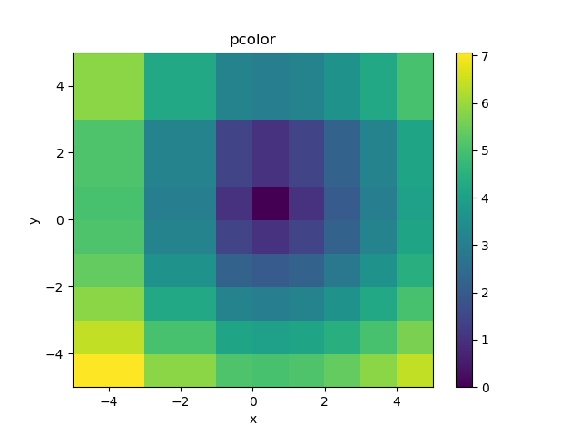

https://matplotlib.org/stable/api/_as_gen/matplotlib.pyplot.pcolor.html
https://matplotlib.org/stable/api/_as_gen/matplotlib.pyplot.colorbar.html
https://numpy.org/doc/stable/reference/generated/numpy.meshgrid.html
Create a pseudocolor plot with a 'non-regular' rectangular grid.
# matplotlib.pyplot.pcolor(*args, norm=None, cmap=None, vmin=None, vmax=None, data=None, **kwargs) # Call signature: # pcolor([X, Y,] C, **kwargs) # X and Y can be used to specify the corners of the quadrilaterals. # C : 2D array-like, the color-mapped values # X, Y : array-like, optional # The coordinates of the corners of quadrilaterals: # (X[i+1, j], Y[i+1, j]) (X[i+1, j+1], Y[i+1, j+1]) # +-----+ # | | # +-----+ # (X[i, j], Y[i, j]) (X[i, j+1], Y[i, j+1])
# pcolor1.py
import numpy as np
import matplotlib.pyplot as plt
x = np.array([-5,-3,-1,0,1,2,3,4,5])
y = np.array([-5,-4,-3,-2,-1,0,1,3,5])
xx, yy = np.meshgrid(x, y)
#print(xx.shape) # (9, 9)
#print(yy.shape) # (9, 9)
zz = np.sqrt(xx**2 + yy**2)
#print(zz.shape) # (9, 9)
h = plt.pcolor(xx, yy, zz)
#h = plt.pcolor(x, y, zz) # it works
plt.colorbar()
plt.title("pcolor")
plt.xlabel("x")
plt.ylabel("y")
plt.show()
